화면 구성
왼쪽에서 블록을 조립하면, 오른쪽에 정규식과 대상 텍스트에 적용한 결과가 표시됩니다.
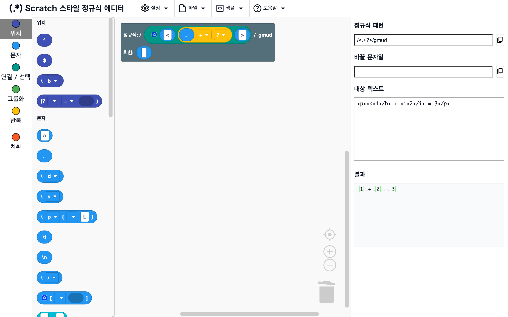
작업 영역과 도구 상자
위치화면 왼쪽
맨 왼쪽의 도구 상자에서 블록을 끌어와 작업 영역에 놓습니다. 작업 영역에는 처음부터 루트 블록이 있으며, 여기에 연결한 블록으로 정규식이 만들어집니다. 도구 상자의 카테고리 이름을 클릭하면 그 카테고리의 블록으로 이동합니다.
정규식 패턴, 바꿀 문자열, 대상 텍스트, 결과
위치화면 오른쪽
- 정규식 패턴: 만든 정규식이
/패턴/플래그형식으로 표시됩니다 - 바꿀 문자열: 루트의 치환 칸에 연결한 블록으로 만든 치환이 표시됩니다
- 대상 텍스트: 정규식을 시험해 볼 텍스트를 입력합니다
- 결과: 대상 텍스트에 정규식을 적용한 결과가 표시됩니다(결과 표시 참고)
블록이나 대상 텍스트를 바꾸면 표시가 바로 갱신됩니다.
결과 표시
결과에는 루트의 치환 칸이 "치환 없음"인 동안에는 매칭된 부분이, 치환 블록을 연결하면 치환한 텍스트가 표시됩니다.
매칭 강조 표시
위치결과(치환 칸이 "치환 없음"일 때)
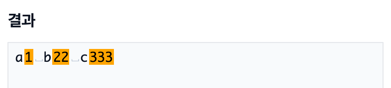
대상 텍스트에서 정규식에 매칭된 부분이 주황색으로 표시됩니다.
예
\d+→a1 b22
치환 강조 표시
위치결과(치환 칸에 블록을 연결했을 때)
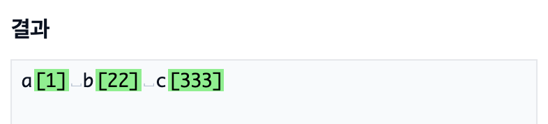
치환한 텍스트가 표시되며, 바뀐 부분은 초록색으로 표시됩니다.
예
- 정규식
\d+, 치환[$&]→a[1] b[22]
공백 문자 표시
위치결과
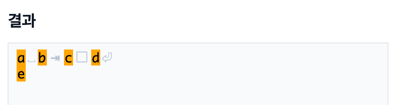
눈에 보이지 않는 공백 문자가 흐린 기호로 표시됩니다.
␣: 스페이스□: 전각 스페이스⇥: 탭⏎: 줄바꿈
주의
기호는 표시용일 뿐입니다. 결과에서 복사해도 기호는 포함되지 않습니다(원래의 공백 문자가 복사됩니다).
오류 표시
위치결과
정규식이 올바르지 않으면(예: 닫히지 않은 () 결과에 오류 메시지가 표시됩니다.
오른쪽 클릭 메뉴
블록을 오른쪽 클릭하면(스마트폰에서는 길게 누르면) 그 블록에 대한 작업 메뉴가 열립니다.
사용할 수 없는 작업은 흐리게 표시됩니다.
오른쪽에 ?가 있는 항목은 ?를 클릭하면 이 페이지에 있는 해당 기능의 설명이 새 탭에서 열립니다.
블록으로 변환 / 텍스트로 변환
위치블록을 오른쪽 클릭 → "블록으로 변환" / "텍스트로 변환"
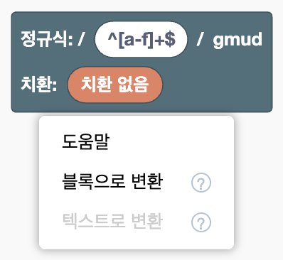
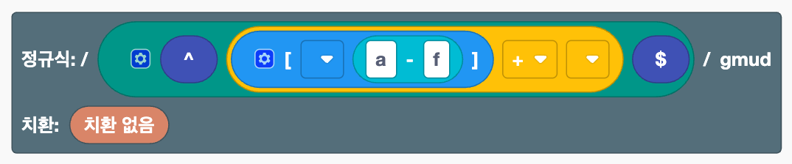
텍스트로 쓴 정규식과 블록을 서로 변환합니다.
- 블록으로 변환: 텍스트 블록이나 루트의 정규식 칸에 입력한 정규식을 블록의 조합으로 바꿉니다. 루트를 오른쪽 클릭하면 정규식 칸의 내용이 변환됩니다.
- 텍스트로 변환: 오른쪽 클릭한 블록을 안에 있는 블록과 함께 하나의 텍스트 블록으로 바꿉니다. 루트의 정규식 칸에 연결된 블록이라면, 루트에 정규식을 직접 입력한 상태로 돌아갑니다.
둘 다 Ctrl+Z(Mac에서는 ⌘+Z) 한 번으로 되돌릴 수 있습니다.
예
- 루트의 정규식 칸에
^[a-f]+$를 입력하고 블록으로 변환 → 줄의 시작, 문자 클래스, 범위,+, 줄의 끝 블록의 조합이 됩니다
주의
[ ]블록 안이나 치환 칸에 있는 텍스트 블록은 단독으로 변환할 수 없습니다([a-f]전체를 텍스트로 쓰면 변환할 수 있습니다)- 텍스트로 변환한 뒤 다시 블록으로 변환해도 외부 입력 같은 표시 설정은 복원되지 않습니다
- 해당하는 블록이 없는 부분(
\x41등)은 텍스트 블록으로 남습니다
N개 묶기 / 묶음 해제
위치연결, 선택, 치환 연결 안의 블록을 오른쪽 클릭 → "2개 묶기"~"5개 묶기", "6개 이상 묶기…", "묶음 해제"
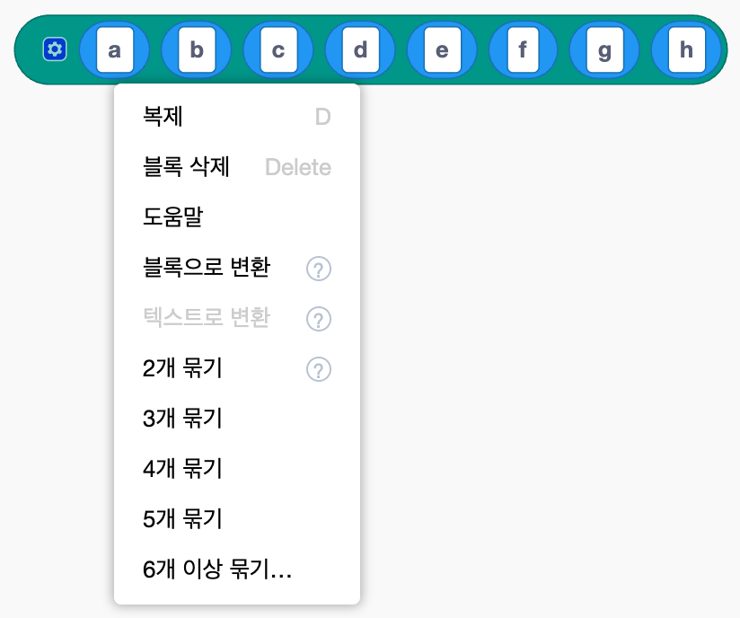

드래그하지 않고 연결 블록의 내용을 재구성합니다.
- N개 묶기: 오른쪽 클릭한 블록부터 오른쪽으로 N개를 같은 종류의 새 블록에 넣습니다
- 6개 이상 묶기…: 개수를 입력받은 뒤 묶습니다
- 묶음 해제: 안쪽에 있는 같은 종류의 블록 내용을 같은 위치에서 바깥쪽 블록으로 풀어 놓습니다
묶어도 만들어지는 정규식은 바뀌지 않습니다. 외부 입력 / 내부 입력과 함께 사용하면, 길고 복잡한 정규식을 의미 있는 덩어리로 정리해 읽기 쉽게 만들 수 있습니다.
예
- "a"부터 "h"까지 연결한 블록에서 a를 오른쪽 클릭 → "4개 묶기" → "(a b c d)", "e", "f", "g", "h"가 됩니다
주의
문자 클래스 [ ] 안에서는 사용할 수 없습니다([ ] 안에 [ ]를 넣으면 다른 뜻이 되기 때문입니다).
외부 입력 / 내부 입력
위치칸이 여러 개인 블록을 오른쪽 클릭 → "외부 입력" / "내부 입력"


블록의 칸을 배치하는 방식을 바꿉니다. "외부 입력"은 칸을 세로로 쌓고, "내부 입력"은 다시 한 줄로 되돌립니다. 연결이나 선택이 길어졌을 때 읽기 쉬워집니다. 만들어지는 정규식은 바뀌지 않습니다.
도움말
위치블록을 오른쪽 클릭 → "도움말"
블록 목록에서 그 블록의 설명을 엽니다.
블록 다루기
블록의 기본 조작은 Scratch와 같습니다. 스마트폰에서도 탭과 드래그로 똑같이 할 수 있습니다.
기본 조작
위치작업 영역
- 연결: 블록을 다른 블록의 칸(움푹 들어간 부분)으로 끌어다 놓습니다
- 분리: 연결된 블록을 끌어서 빼냅니다
- 삭제: 블록을 도구 상자나 휴지통으로 끌어다 놓거나, 선택한 뒤 Delete 키를 누릅니다
- 복제: 오른쪽 클릭 → "복제". Ctrl+C / Ctrl+V(Mac에서는 ⌘+C / ⌘+V)도 사용할 수 있습니다
- 실행 취소 / 다시 실행: Ctrl+Z / Ctrl+Shift+Z(Mac에서는 ⌘+Z / ⌘+Shift+Z). 작업 영역의 빈 곳을 오른쪽 클릭해서도 할 수 있습니다
- 정리: 작업 영역의 빈 곳을 오른쪽 클릭 → "블록 정리"
- 확대 / 축소: 오른쪽 아래의
+-버튼
칸의 개수 바꾸기
위치톱니바퀴 아이콘이 있는 블록(연결, 선택, 문자 클래스, 치환 연결)의 톱니바퀴 아이콘을 클릭
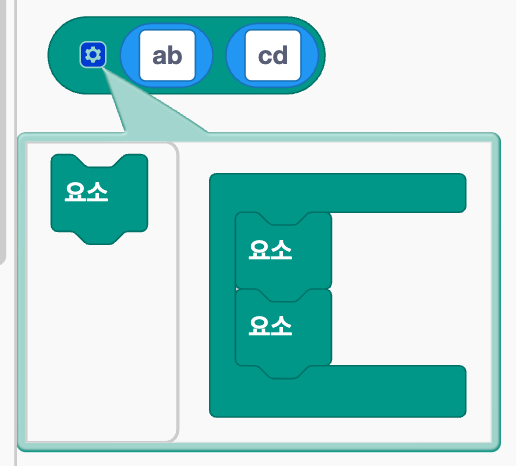
작은 편집 창이 열립니다. 안에 있는 "요소" 블록을 늘리거나 줄이면 칸의 개수가 바뀝니다. "요소" 블록의 순서를 바꾸면 칸의 순서도 바뀝니다.
그룹 이름 만들기, 바꾸기, 삭제하기
위치이름 붙은 그룹, 이름 있는 역참조, 이름 있는 그룹 참조의 드롭다운
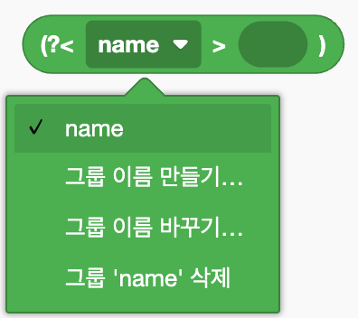
- 만들기: "그룹 이름 만들기…"를 선택하고 이름을 입력합니다
- 바꾸기: "그룹 이름 바꾸기…"를 선택합니다. 그 이름을 사용하는 모든 블록의 이름도 함께 바뀝니다
- 삭제: "그룹 '이름' 삭제"를 선택합니다. 그 이름을 사용하는 블록도 함께 삭제됩니다
주의
이름은 영문자로 시작해야 하며, 영문자, 숫자, _만 사용할 수 있습니다. 이미 있는 이름은 사용할 수 없습니다.
파일
상단 메뉴의 "파일"에서 사용합니다. 만든 정규식을 파일로 저장하고, 다시 불러올 수 있습니다.
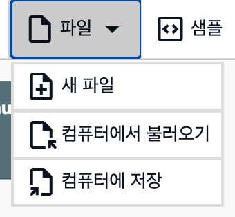
새 파일
위치파일 → "새 파일"
작업 영역과 대상 텍스트를 비우고 처음 상태로 되돌립니다.
주의
확인 없이 모두 지워지며, Ctrl+Z로 되돌릴 수 없습니다. 남겨 두고 싶은 내용은 먼저 저장하세요.
저장
위치파일 → "컴퓨터에 저장"
작업 영역의 블록과 대상 텍스트를 regex_workspace.json이라는 이름의 JSON 파일로 다운로드합니다.
불러오기
위치파일 → "컴퓨터에서 불러오기"
저장한 JSON 파일을 선택하면 블록과 대상 텍스트가 저장했을 때의 상태로 돌아갑니다.
주의
작업 영역의 현재 내용은 불러온 내용으로 바뀝니다.
샘플
상단 메뉴의 "샘플"에서 예제를 불러옵니다. 불러온 뒤 블록을 바꿔 보며 결과가 어떻게 달라지는지 확인해 보세요.
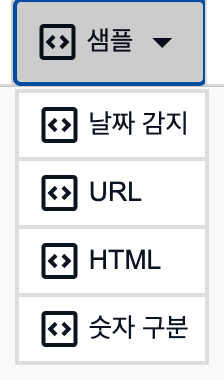
주의
작업 영역의 현재 내용은 샘플로 바뀝니다.
날짜 감지
위치샘플 → "날짜 감지"
2025-08-20 14:21:03 같은 날짜와 시간을 그룹으로 연, 월, 일, 시, 분으로 나누고, 치환으로 2025/08/20⇥14:21 형태로 바꿔 배열합니다.
URL
위치샘플 → "URL"
이름 붙은 그룹으로 URL에서 도메인과 경로를 추출하고, 치환으로 "도메인→경로" 형태로 바꿉니다.
HTML
위치샘플 → "HTML"
<.+?>로 HTML 태그만 제거합니다.
?를 + 블록에서 빼면 전부 제거되는 것을 확인할 수 있습니다(최소 매칭).
숫자 구분
위치샘플 → "숫자 구분"
후방탐색과 전방탐색으로 숫자와 숫자 사이의 위치에 매칭해, 1340을 1, 3, 4, 0처럼 한 자리씩 구분합니다.
설정
상단 메뉴의 "설정"에서 사용합니다.
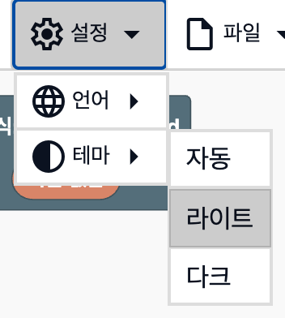
주의
설정은 저장되지 않으므로, 페이지를 다시 열면 기본값으로 돌아갑니다.
테마
위치설정 → "테마"
- 자동: 기기의 설정에 맞춰 라이트와 다크를 전환합니다
- 라이트: 밝은 색을 사용합니다
- 다크: 어두운 색을 사용합니다
언어
위치설정 → "언어"
화면과 블록의 언어를 바꿉니다. 日本語, English, 简体中文, Español, 한국어, हिंदी 중에서 고를 수 있습니다. 처음에는 브라우저의 언어를 따릅니다(지원하지 않는 언어라면 English).
기타
참고 페이지 열기
위치도움말 → "블록 목록" / "기능 소개"
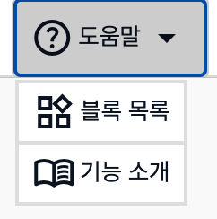
블록 목록 또는 이 페이지(기능 소개)를 새 탭에서 엽니다. 작업 중인 블록은 그대로 유지됩니다.
주의
참고 페이지는 에디터와 같은 6개 언어로 제공되며, 에디터에서 선택한 언어로 열립니다.
복사
위치정규식 패턴과 바꿀 문자열 오른쪽에 있는 버튼
정규식 패턴(/패턴/플래그 형식) 또는 바꿀 문자열을 클립보드에 복사합니다.
자신의 프로그램에 붙여 넣어 사용할 수 있습니다.
대상 텍스트에 탭 입력하기
위치대상 텍스트
대상 텍스트 입력란에서 Tab 키를 누르면 다른 입력란으로 이동하지 않고 탭 문자가 입력됩니다. 탭으로 구분된 데이터를 시험할 때 편리합니다.